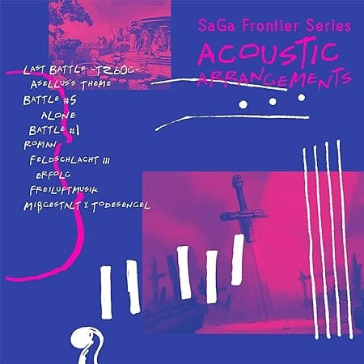

【整備中】サガフロ装備情報
全身防具
| 斬 | 打 | 突 | 熱 | 冷 | 雷 | 気 | 状 | 備考 | |
|---|---|---|---|---|---|---|---|---|---|
| コンバットスーツ | 15 | 10 | 15 | 20 | 20 | 10 | 10 | 10 | ・暗闇耐性 |
| ジャンプスーツ | 25 | 15 | 25 | 30 | 30 | 15 | 15 | 15 | ・暗闇耐性 |
| パワードスーツ | 50 | 50 | 50 | 50 | 50 | 30 | 30 | 30 | ・筋力＋10 ・運動性＋10 ・暗闇耐性 |
| スプリガンスーツ | 55 | 55 | 55 | 35 | 35 | 35 | 35 | 35 | ・暗闇耐性 |
| ラバースーツ | 22 | 22 | 22 | 12 | 12 | 52 | 12 | 12 | ・暗闇耐性 |
体防具
| 斬 | 打 | 突 | 熱 | 冷 | 雷 | 気 | 状 | 備考 | |
|---|---|---|---|---|---|---|---|---|---|
| ファイバーべスト | 8 | 8 | 12 | 8 | 8 | 8 | 8 | 8 | ・ |
| リジッドレザー | 12 | 16 | 22 | 12 | 12 | 12 | 12 | 12 | ・ |
| 防弾ベスト | 18 | 22 | 60 | 18 | 18 | 18 | 18 | 18 | ・ |
| 電磁活性鎧 | 25 | 25 | 33 | 35 | 35 | 35 | 35 | 25 | ・ |
| 武神の鎧 | 32 | 32 | 42 | 32 | 32 | 32 | 32 | 32 | ・ |
| 闇のローブ | 8 | 8 | 26 | 2 | 8 | 8 | 26 | 26 | ・霊感+5 ・暗闇耐性 |
| ブルーエルフ | 20 | 20 | 20 | 25 | 25 | 25 | 25 | 20 | ・水攻撃耐性 |
| 陽炎のケープ | 18 | 18 | 28 | 53 | 18 | 28 | 28 | 28 | ・知力+7 ・集中力+7 |
| 月白のショール | 17 | 17 | 27 | 17 | 62 | 27 | 27 | 27 | ・マヒ耐性、睡眠耐性 |
| 星屑のマント | 16 | 16 | 26 | 26 | 26 | 51 | 26 | 26 | ・集中力+5 ・霊感+5 ・魅力+5 ・気絶耐性 |
| 木陰のローブ | 9 | 9 | 9 | 24 | 24 | 24 | 24 | 24 | ・集中力+9 ・使用すると味方単体のHP回復＋毒を治療。ただしメカは無効。 |
| 炎獣の革 | 16 | 16 | 16 | 48 | 16 | 16 | 16 | 16 | ・ |
| 魔獣の革 | 24 | 34 | 34 | 34 | 34 | 34 | 24 | 24 | ・ |
| 強化装甲 | 30 | 20 | 30 | 20 | 10 | 20 | 20 | 20 | ・ |
| 飛天の鎧 | 27 | 27 | 27 | 17 | 17 | 17 | 17 | 17 | ・運動性+10 ・足元攻撃耐性が付く |
| 冥帝の鎧 | 35 | 35 | 35 | 35 | 35 | 35 | 35 | 35 | ・気絶耐性 |
| 毛皮 | 6 | 12 | 12 | 2 | 12 | 2 | 2 | 2 | ・ |
| プロテクター | 10 | 10 | 15 | 5 | 5 | 5 | 5 | 5 | ・ |
| ボーンブレスト | 13 | 13 | 1 | -7 | 13 | 13 | 5 | 5 | ・ |
| 精霊銀の鎧 | 24 | 24 | 24 | 20 | 20 | 24 | 40 | 40 | ・音波耐性が付く。 |
| 修士の法衣 | 10 | 10 | 10 | 25 | 25 | 25 | 25 | 30 | ・霊感+5 |
| ゴールデンフリース | 28 | 28 | 28 | 38 | 38 | 38 | 38 | 43 | ・マヒ耐性、睡眠耐性 |
服
| 斬 | 打 | 突 | 熱 | 冷 | 雷 | 気 | 状 | 備考 | |
|---|---|---|---|---|---|---|---|---|---|
| コットンシャツ | 3 | 7 | 3 | 3 | 3 | 3 | 3 | 3 | ・ |
| シルティーク | 3 | 3 | 3 | 3 | 11 | 3 | 3 | 3 | ・ |
| 魔道着 | 4 | 4 | 4 | 14 | 14 | 14 | 4 | 4 | ・集中力+5 |
| 武道着 | 7 | 12 | 7 | 7 | 7 | 7 | 7 | 7 | ・ |
| 防護服 | 8 | 8 | 8 | 18 | 18 | 18 | 8 | 8 | ・ |
| 強化服 | 10 | 10 | 10 | 10 | 10 | 10 | 15 | 15 | ・ |
| 力帯 | 1 | 1 | 1 | 6 | 6 | 6 | 1 | 21 | ・筋力+20 |
頭
| 斬 | 打 | 突 | 熱 | 冷 | 雷 | 気 | 状 | 備考 | |
|---|---|---|---|---|---|---|---|---|---|
| ジャンクヘルム | 4 | 6 | 6 | 4 | 1 | 1 | 1 | 1 | ・暗闇耐性 |
| ヨーク綿の帽子 | 5 | 5 | 5 | 2 | 10 | 2 | 2 | 2 | ・暗闇耐性 |
| ファイバーフード | 6 | 6 | 6 | 2 | 2 | 2 | 2 | 2 | ・暗闇耐性 |
| レーザースコープ | 7 | 7 | 7 | 3 | 3 | 3 | 3 | 3 | ・集中力+10 ・暗闇耐性 |
| ミラーグラス | 8 | 8 | 8 | 4 | 4 | 4 | 4 | 4 | ・暗闇耐性 |
| 赤外線スコープ | 6 | 6 | 6 | 2 | 2 | 2 | 2 | 2 | ・暗闇耐性 ・所持していると、ディスペアの赤外線センサーが視認できる |
| マジックハット | 6 | 6 | 6 | 16 | 16 | 16 | 16 | 6 | ・暗闇耐性 ・固有能力：精霊石 |
 腕
腕
| 斬 | 打 | 突 | 熱 | 冷 | 雷 | 気 | 状 | 備考 | |
|---|---|---|---|---|---|---|---|---|---|
| レザーグラブ | 4 | 4 | 4 | 4 | 2 | 2 | 2 | 2 | ・ |
| シェルブレーサー | 6 | 6 | 6 | 3 | 3 | 3 | 3 | 3 | ・ |
| アーマーグラブ | 8 | 12 | 12 | 5 | 5 | 5 | 5 | 5 | ・ |
| サイバーグラブ | 9 | 9 | 9 | 9 | 9 | 4 | 9 | 4 | ・ |
| 精霊銀の腕輪 | 7 | 7 | 7 | 27 | 27 | 27 | 27 | 7 | ・音波耐性 |
 足
足
| 斬 | 打 | 突 | 熱 | 冷 | 雷 | 気 | 状 | 備考 | |
|---|---|---|---|---|---|---|---|---|---|
| レザーブーツ | 3 | 3 | 3 | 3 | 1 | 1 | 1 | 1 | ・ |
| ラバーソウル | 5 | 5 | 5 | 5 | 5 | 25 | 2 | 2 | ・運動性+2 ・雷属性の攻撃によるダメージを軽減 |
| ジェットブーツ | 7 | 7 | 7 | 7 | 7 | 2 | 7 | 7 | ・運動性+5 ・足元攻撃耐性 |
| フェザーグリーブ | 7 | 7 | 7 | 2 | 2 | 2 | 12 | 12 | ・ |
| 鉄下駄 | 8 | 8 | 8 | 8 | 8 | 0 | 8 | 8 | ・丈夫さ+10 |
装飾品
| 斬 | 打 | 突 | 熱 | 冷 | 雷 | 気 | 状 | 備考 | |
|---|---|---|---|---|---|---|---|---|---|
| 牙のお守り | 1 | 1 | 1 | 6 | 6 | 6 | 1 | 6 | ・筋力+5 |
| 翼のお守り | 1 | 1 | 1 | 6 | 6 | 6 | 1 | 6 | ・運動性+5 |
| 花のお守り | 1 | 1 | 1 | 6 | 6 | 6 | 1 | 6 | ・霊感+5 ・魅力+5 |
| 鋼のお守り | 1 | 1 | 1 | 1 | 1 | 1 | 1 | 6 | ・丈夫さ+5 |
| 紅炎石 | 1 | 1 | 1 | 25 | 1 | 1 | 1 | 1 | ・使用すると消滅する。「ファイアーバリア」をまとえる。 |
| 銀氷石 | 1 | 1 | 1 | 1 | 25 | 1 | 1 | 1 | ・使用すると消滅する。「フリーズバリア」をまとえる。 |
| 雷の結晶 | 1 | 1 | 1 | 1 | 1 | 25 | 1 | 1 | ・使用すると消滅する。「サンダーバリア」をまとえる。 |
| ブラッドチャリス | 1 | 1 | 1 | -15 | 1 | 1 | -15 | -15 | ・霊感+5 ・気絶耐性 |
| 精霊銀のピアス | 1 | 1 | 1 | 11 | 11 | 11 | 11 | 21 | ・音波耐性 |
| エメス・タグ | 5 | 5 | 5 | 5 | 5 | 5 | 15 | 15 | ・石化耐性 |
| 羽飾り | 1 | 1 | 11 | 1 | 1 | 1 | 11 | 11 | ・魅力+5 |
| パープルアイ | 4 | 4 | 4 | 4 | 4 | 4 | 4 | 14 | ・霊感+7 ・凝視耐性 ・固有能力：幻夢の一撃 |
| パールハート | 2 | 2 | 2 | 2 | 7 | -3 | 2 | 2 | ・水攻撃耐性 |
| クリスナイフ | 3 | 3 | 3 | 13 | 13 | 13 | 13 | 43 | ・ |
| ユニコーンの涙 | 1 | 1 | 1 | 1 | 1 | 1 | 1 | 1 | ・霊感+1 ・毒耐性 |
| トウテツパターン | 3 | 3 | 3 | 3 | 3 | 3 | 23 | 23 | ・精神耐性 ・バーサーカー・混乱・魅惑効果を無効化 |
| 砂の器 | 2 | 2 | 2 | 2 | 2 | 2 | 18 | 18 | ・石化耐性 ・固有能力：流砂 |
| 天使のブローチ | 5 | 5 | 5 | 15 | 15 | 15 | 15 | 15 | ・精神耐性 ・バーサーカー・混乱・魅惑効果を無効化 |
| がらくた | 2 | 2 | 2 | 2 | 2 | 2 | 2 | 12 | ・ |
| 鎮魂の勾玉 | 1 | 1 | 1 | 11 | 11 | 11 | 11 | 11 | ・固有能力：聖歌 |
盾
| 斬 | 打 | 突 | 熱 | 冷 | 雷 | 気 | 状 | 備考 | |
|---|---|---|---|---|---|---|---|---|---|
| バックラー | 20 | 20 | 0 | 0 | 0 | 0 | 0 | 0 | ・ |
| シェルガード | 16 | 16 | 16 | 0 | 0 | 0 | 0 | 0 | ・ |
| エクセルガード | 28 | 28 | 28 | 0 | 0 | 0 | 0 | 0 | ・ |
| 玄武の盾 | 24 | 24 | 24 | 0 | 24 | 0 | 0 | 0 | ・水攻撃耐性 |
| 竜鱗の盾 | 20 | 20 | 20 | 20 | 20 | 20 | 0 | 0 | ・ |
| 水鏡の盾 | 24 | 24 | 24 | 24 | 0 | 0 | 0 | 0 | ・水攻撃耐性 |
| デュラハンの盾 | 22 | 22 | 22 | 22 | 22 | 22 | 22 | 0 | ・筋力+5 ・丈夫さ+5 ・固有能力：死の凝視 |
| ワンダーバングル | 0 | 0 | 62 | 0 | 0 | 0 | 0 | 0 | ・ |
サガ フロンティア オリジナル・サウンドトラック（CD）

SaGa Frontier Series ACOUSTIC ARRANGEMENTS
